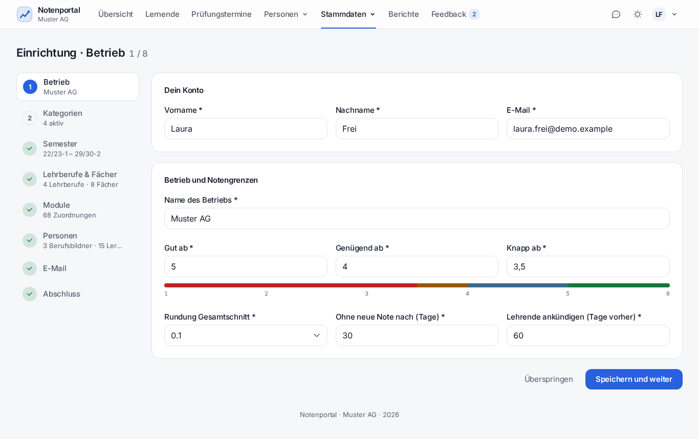

Von einem leeren Ubuntu zum laufenden Portal: ein Befehl, danach nur noch Browser.
| Punkt | Wert |
|---|---|
| Betriebssystem | Ubuntu 24.04 LTS (frisch reicht) |
| Rechte | Ein Benutzer mit sudo |
| Arbeitsspeicher | ca. 2 GB |
| Port | 80 frei (oder mit --port ein anderer) |
| Netz | Internetzugang während der Installation |
Alles andere – Apache, MariaDB, PHP, Node, Composer – installiert das Skript selbst.
sudo apt update && sudo apt install -y git
sudo install -d -o "$USER" -g "$USER" /var/www/notenportal
git clone https://github.com/magic-usb-c/notenportal.git /var/www/notenportal
cd /var/www/notenportal
sudo ./install.sh/var/www? Ubuntu legt Home-Verzeichnisse so an, dass Apache sie nicht betreten darf – jede Seite käme als «403 Forbidden». Liegt das Portal falsch, bricht install.sh sofort ab und nennt den Befehl zum Verschieben.Am Ende nennt das Skript die Adresse, die E-Mail des ersten Admin-Kontos und ein Startpasswort. Dieses Passwort erscheint genau einmal.
| Schritt | Inhalt |
|---|---|
| Pakete | Apache, MariaDB, PHP ≥ 8.3 samt Erweiterungen, Node 22, Composer |
| Datenbank | Datenbank plus zwei Benutzer: einer nur für Daten, einer für Schemaänderungen |
| Konfiguration | .env mit Zufallspasswörtern und Produktionswerten, Anwendungsschlüssel |
| Schema | Migrationen, Grundstammdaten (Rollen, Kategorien) |
| Konto | Erstes Admin-Konto mit Startpasswort |
| Oberfläche | npm ci und Build |
| Webserver | VirtualHost, Port, ufw-Freigabe falls ufw läuft |
| Automatik | /etc/cron.d/<verzeichnis> für Sicherung, Mailversand, Benachrichtigungen |
| Abschluss | Dateirechte, Schlusstest gegen /login |
sudo ./install.sh --help zeigt die Liste
sudo ./install.sh --port 8082 --db notenportal_i2 zweite Instanz daneben
sudo ./install.sh --host notenportal.example.ch Servername statt erkannter IP
sudo ./install.sh --ohne-firewall keine ufw-Freigabe
sudo ./install.sh --neues-admin-passwort neues Startpasswort, wenn der Zugang weg istEin erneuter Lauf im selben Verzeichnis ist ein Update: Pakete, Abhängigkeiten, Build und
Migrationen werden nachgezogen; .env, Webserver-Konfiguration und Konten bleiben.
Anmelden mit E-Mail und Startpasswort, das Portal verlangt sofort ein eigenes Passwort, dann öffnet die Einrichtung von selbst und führt durch acht Schritte.

| # | Schritt | Was hier passiert |
|---|---|---|
| 1 | Betrieb | Eigenes Konto, Betriebsname, Notengrenzen (gut / genügend / knapp), Rundung, Fristen |
| 2 | Kategorien | Schule, ÜK, Betrieb … mit Rundung, Gewicht und Promotionsregeln |
| 3 | Semester | Generator mit Vorschau erzeugt den ganzen Semesterplan |
| 4 | Lehrberufe & Fächer | Lehrberufe und BMS/ABU-Fächer sind vorausgewählt |
| 5 | Module | Module je Lernort als Liste; hier lässt sich auch der Modulkatalog einlesen |
| 6 | Personen | Berufsbildner, Admins und Lernende zeilenweise; Startpasswörter zum Drucken |
| 7 | SMTP-Server, Absender, Passwort, Testmail | |
| 8 | Abschluss | Übersicht, danach ist das Portal betriebsbereit |
Die Einrichtung bleibt danach erreichbar (Betrieb → «Einrichtung») und ist der Weg, später einen ganzen Jahrgang auf einmal anzulegen: bis 100 Lernende und 50 Berufsbildner je Vorgang.
| Punkt | Vorgehen |
|---|---|
| HTTPS | Das Skript richtet kein Zertifikat ein. Ohne TLS gehen Passwörter im Klartext durchs Netz. Eigene CA oder Firmenzertifikat: docs/betrieb.md, Abschnitt «HTTPS». |
| Erstinstallation schreibt Mails nur ins Log. SMTP unter Admin → Betrieb → E-Mail eintragen, Testmail senden. | |
| Kopie ausser Haus | Ziel (Ordner oder SSH) unter Admin → Betrieb hinterlegen, «Verbindung testen». |
| Zeitzonen der Datenbank | mysql_tzinfo_to_sql /usr/share/zoneinfo | sudo mysql mysql |
| Firewall | Das Skript öffnet nur den Portalport; einschränken auf die berechtigten Netze bleibt Handarbeit. |
php artisan notenportal:bereitschaftRein lesend. Prüft Umgebung (APP_ENV, APP_DEBUG, APP_URL, Secure-Cookie), Mail-Umleitung,
Kopie ausser Haus, letzte Sicherung, fehlgeschlagene Jobs und Mails, Kalenderabgleich und offene
Migrationen. Jeder Punkt hat Status ok / warnung / fehler samt Handlungsanweisung;
Exit-Code 1, sobald ein Punkt als Fehler gilt. Mit --json maschinenlesbar.
sudo ./install.sh --port 8082 --db notenportal_i2 --ohne-firewallLegt eine eigene Datenbank, einen eigenen DB-Benutzer, einen eigenen VirtualHost und die Zeile
Listen 8082 an. Die bestehende Instanz bleibt unangetastet. Entfernen:
sudo a2dissite notenportal-i2
sudo sed -i '/^Listen 8082$/d' /etc/apache2/ports.conf
sudo systemctl reload apache2
sudo mysql -e "DROP DATABASE notenportal_i2; DROP USER 'notenportal_i2_web'@'localhost';"
sudo rm -rf /var/www/notenportal-i2 /etc/apache2/sites-available/notenportal-i2.conf